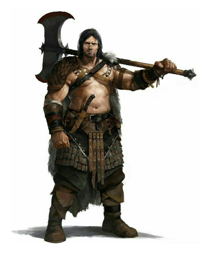
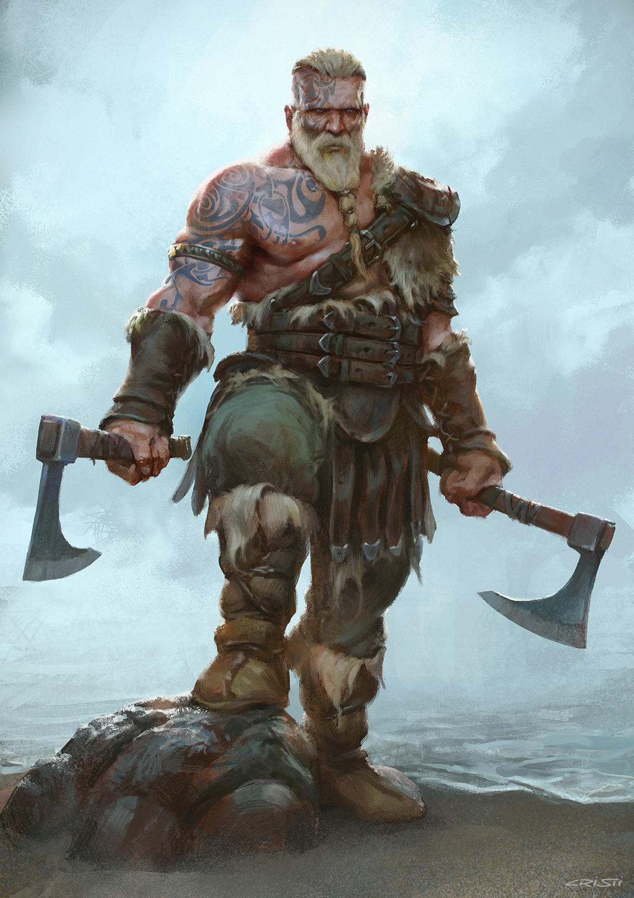

Arqueiro

O Arqueiro é o herói especializado em armas físicas de longo alcance: arcos e bestas. Ele dedica sua vida e todo seu treinamento para atingir a perfeição no uso do arco.
Para realizar um ataque básico à distância, role a Destreza do personagem (ao invés da Força) para calcular o valor de ataque.
➢ Recuada Estratégica (inerente): uma vez por combate, ao receber dano, o personagem pode utilizar esta habilidade para escapar dos atacantes próximos e se deslocar para outra posição no campo de batalha (inimigos que estavam atacando o personagem passam a atacar algum outro herói, caso exista). Não consome o turno ao ser realizada.
➢ Disparo Crítico: o personagem efetua um poderoso disparo, causado dano crítico que aumenta o ataque em +1d/+2d/+3d/+4d/+5d e ignora 10 de Proteção do oponente. Custa 5 PMs.
➢ Concentração: ao ativar, o personagem gasta um turno estudando seus oponentes e o campo de batalha. Durante seus próximos 3 turnos, recebe +1/+2/+3/+4/+5 em Destreza. Custa 5 PMs.
➢ Esquiva Aprimorada (passiva): o personagem recebe +1/+2/+3/+4/+5 em Esquiva.
Assassino

O Assassino é um aventureiro sombrio, especializado em eliminar seus alvos rápida e furtivamente.
➢ Avanço Furtivo (inerente): uma vez por combate, permite se mover pelo campo de batalha sem gastar sua ação, podendo, por exemplo, se mover e logo em seguida atacar. Abater um inimigo (ou participar de um abate) permite utilizar esta habilidade novamente.
➢ Apunhalar (passiva): o personagem recebe bônus de ataque igual a +1d/+2d/+3d/+4d/+5d ao atacar um oponente pelas costas. Apunhalar não pode ser usada duas vezes seguidas contra o mesmo alvo.
➢ Envenenar Lâmina: este ataque envenena o alvo, causando dano adicional de +2/+4/+6/+8/+10 que ignora Proteção e resistências. Durante as próximas 4 rodadas, a vítima perde 2/4/6/8/10 PVs no início do seu próprio turno. Custa 5 PMs.
Essa habilidade só pode ser usada ao atacar com facas, adagas ou punhais. Algumas criaturas são imunes a veneno, não sendo afetadas por esta habilidade.
Esquiva Perfeita (passiva): o Assassino pode desviar de qualquer ataque que consiga ver. Em vez de sua esquiva normal, ele pode realizar uma esquiva perfeita com 10/20/30/40/50% de chance de sucesso, independentemente da precisão do alvo. Custa 1 PM (em caso de falha, o PM não é gasto).
Bárbaro
Bárbaros são como são chamados os poderosos guerreiros das montanhas do norte. Possuem uma civilização primal, baseada na caça e pesca, e o estudo é substituído pela força e sabedoria. Sua arma favorita é o machado.
➢ Bárbaro (inerente): recebe a perícia Sobrevivência gratuitamente. Bárbaros não sabem ler, escrever ou se portar em público, nem podem equipar armaduras pesadas.
➢ Frenesi: ao ativar, o personagem entra em estado de Fúria. Neste estado, ele recebe bônus temporário de +1/+2/+3/+4/+5 em Força e +10/+20/+30/+40/+50 de Vida, mas sua Proteção é reduzida a zero e ele não pode esquivar, bloquear, fugir nem ativar habilidades, somente atacar. Após o término da Fúria sofre redutor cumulativo de -1/-2/-3/-4/-5 em Força até descansar. Não tem custo.
➢ Pele de Ferro (passiva): o personagem reduz em 2/4/6/8/10 todo o dano recebido pós-mitigação.
➢ Perícia com Machados e Martelos (passiva): o personagem recebe +2/+4/+6/+8/+10 de ataque utilizando machados ou martelos.
➢ Vigor (passiva): o personagem possui deslocamento básico e resistência à fadiga duas vezes superior aos outros integrantes da sua raça. Além disso, recebe 5/10/15/20/25 de Vida adicional.
Berserker
Berserker é uma espécie de bárbaro mais bruto, conectado com sua ira primal e os espíritos selvagens. Eles se tornam temíveis em batalha, perdendo o controle sobre suas próprias ações, podendo inclusive investir contra seus próprios aliados.
➢ Ira (inerente): o Berserker fica mais forte à medida que recebe dano durante a batalha. A cada 4 de Vida perdida, o personagem ganha +1 de ataque. Caso seja curado ou regenere, ele perde o bônus recebido (proporcional ao valor de vida restaurado). Assim como o Bárbaro, não sabem ler, escrever ou se portar em público, nem podem equipar armaduras pesadas.
➢ Frenesi: ver em Bárbaro.
➢ Força Violenta: o personagem desfere um violento ataque que causa dano extra ao inimigo e a si mesmo. Investe sobre o alvo com bônus de +1d/+2d/+3d/+4d/+5d em ataque, porém com redutor de -1 em Precisão. O personagem também causa 1/2/3/4/5 de dano a si mesmo, que não pode ser reduzido.
➢ Perícia com Machados e Martelos (passiva): ver em Bárbaro.